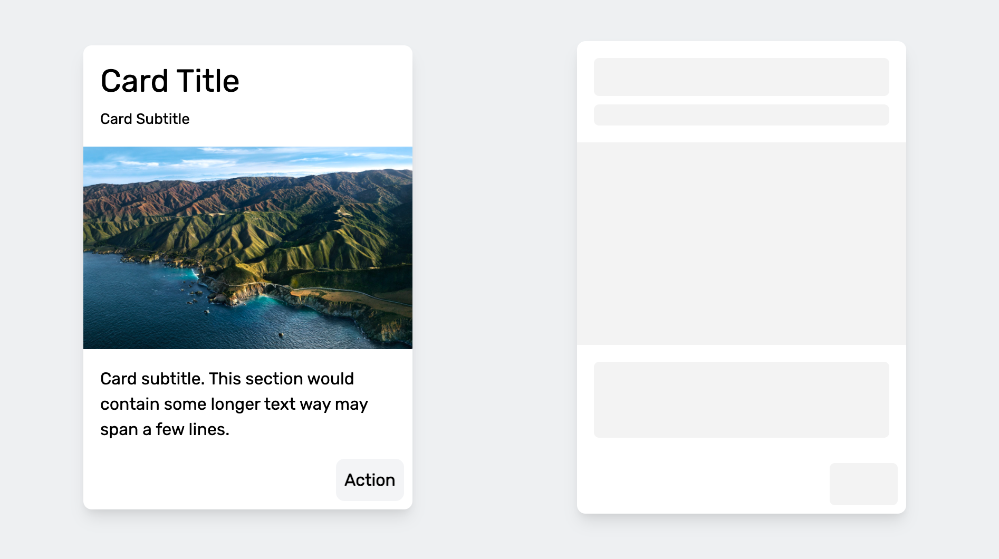

Auto Skelly turns the real elements already on your page into animated loading skeletons, then hands you back the exact same elements when you're ready to reveal them. No separate skeleton components to build or keep in sync, no framework required.

Why use Auto Skelly?
Load time of on-screen content is a big part of user satisfaction, and image-heavy or data-heavy pages can take a while to become useful. To soften that wait, many products show a "skeleton" — a placeholder silhouette of the content that appears instantly and is swapped for the real thing as soon as it's ready.
Normally that means hand-building a second, skeleton-shaped version of
every component and keeping the two in sync forever. Auto Skelly skips
that: you mark up your real content with a few
skelly-*
classes, and the library measures it, covers it with a matching
placeholder, and — this is the headline feature of v1 — hands you back
the exact same, untouched elements the moment you call
remove(). Nothing is destroyed or re-rendered, so skeletons can be shown,
hidden, and shown again as many times as you like. Try it for yourself
in the live demo below.
Getting Started
Auto Skelly ships as an npm package with ESM/CJS builds, and as a single
IIFE bundle you can drop in with a plain
<script>
tag — no jQuery, no dependencies, no build step required. Pick whichever
fits your project.
1. Install from npm
npm i auto-skellyimport { AutoSkelly } from "auto-skelly";
const skelly = new AutoSkelly();
skelly.apply();2. Or load it from a CDN
<script src="https://unpkg.com/auto-skelly"></script>
<script>
const skelly = new AutoSkelly();
skelly.apply();
</script>3. Or self-host and auto-init
Copy
auto-skelly.global.js
into your project. Add the
data-skelly-auto
attribute to the script tag and Auto Skelly will find and skellify
every
skelly-*
element on the page for you, with zero JavaScript of your own. Great for
static pages; if you need to reveal content programmatically (like the
demo on this page does) create your own instance instead, as shown
above.
<script src="./auto-skelly.global.js" data-skelly-auto></script>Marking Up Elements
Add one of four classes to any element you want skellified. Auto Skelly measures each element's own size and border radius, so the placeholder always matches the space your real content takes up — there's nothing else to configure.
<div class="card">
<div class="avatar skelly-circle"></div>
<p class="skelly-text">Jordan Rivera</p>
<img class="skelly-image" src="cover.jpg" alt="" />
<button class="skelly-button">View profile</button>
</div>skelly-text
Add
skelly-text
to any text element. For a single line, Auto Skelly draws one rounded
bar sized to the element's measured width and line-height. If the
element wraps onto two or more lines — its rendered height is at least
twice its line-height — Auto Skelly instead builds a stack of
individual line bars, one per wrapped line, with the last line rendered
shorter, so paragraphs read like real paragraphs instead of one flat
blob.
skelly-image
Add
skelly-image
to an
img
or any element acting as an image. The placeholder fills the element's
exact measured width and height (falling back to its
width/height
attributes, then a 16:9 box) and has no border radius by default, so it
sits flush with the edges of your real image.
skelly-circle
Add
skelly-circle
to avatars and other round elements. The placeholder is sized to the
larger of the element's measured width or height and is always forced
to a perfect circle, regardless of the original element's shape.
skelly-button
Add
skelly-button
to a button-like element. The placeholder matches the button's own
measured size and border radius, so it reads as a disabled version of
the same control rather than a generic block.
Live Demo
This card below is built from plain HTML with
skelly-*
classes on its avatar, text, image, and button. Nothing here is a
screenshot or a separate "loading" component — it's the same DOM
swapping back and forth. Try it out:
Jordan Rivera
Product Designer
Auto Skelly covers this card with a matching skeleton, then hands the exact same elements back untouched — no re-render, no flash, no separate loading component to maintain.
Showing: content
Apply / Remove Lifecycle
apply()
finds every matching
skelly-*
element, covers it with a placeholder, and hides — but does not
remove — the original. Calling it again is safe: elements already
covered are skipped.
remove()
restores every covered element back to exactly how it was. Both methods
accept an optional root to scope the operation to part of the page.
const skelly = new AutoSkelly();
skelly.apply(); // cover every .skelly-* element with a placeholder
// ...fetch data...
skelly.remove(); // restore the original elements exactly as they were
// Scope either call to part of the page:
const card = document.querySelector("#profile-card");
skelly.apply(card);
skelly.remove(card);
// True whenever at least one placeholder is currently showing:
skelly.active;Theming
Constructor Options
Set a default color and animation when you create your instance.
const skelly = new AutoSkelly({
color: "#e3e3e3",
animation: "pulse", // "pulse" | "extraPulse" | "gradient" | "none"
root: document, // default root for apply()/remove() with no args
});setTheme()
Change the color and/or animation on the fly. It updates every
currently-applied placeholder live, without needing to
remove()
and
apply()
again — this is exactly what the color and animation buttons above are
wired to.
skelly.setTheme({ color: "#374151" });
skelly.setTheme({ animation: "gradient" });
skelly.setTheme({ color: "#111827", animation: "extraPulse" });CSS Custom Properties
Under the hood, placeholders read their color and animation duration from CSS custom properties, so you can theme them directly in your own stylesheet too — handy for dark mode via a media query or class, with no JavaScript at all.
:root {
--skelly-color: #e3e3e3;
--skelly-duration: 2s; /* 5s is the default for "gradient" */
}
@media (prefers-color-scheme: dark) {
:root {
--skelly-color: #374151;
}
}Animations
Pass any of these to
animation
or
setTheme(). Try each one on the live demo above.
| Value | Description |
|---|---|
| pulse | The default. A gentle opacity fade in and out. |
| extraPulse | A bolder scale-and-shadow pulse, more attention-grabbing than the standard pulse. |
| gradient | An animated diagonal gradient sweep across the placeholder. |
| none | A static, unanimated placeholder in a solid color. |
Accessibility
Auto Skelly handles a few accessibility details for you automatically:
aria-hidden="true", so screen readers skip the fake content entirely.
aria-busy="true"
for as long as any of its children are skellified, and it's
removed automatically once every sibling has been restored.
prefers-reduced-motion
media query, so visitors who've asked their OS for reduced motion see
static placeholders instead of moving ones — no configuration needed.
API Reference
Options
Passed to new AutoSkelly(options).
| Option | Type | Default | Description |
|---|---|---|---|
| color | string | "#e3e3e3" | Placeholder background color. |
| animation | "pulse" | "extraPulse" | "gradient" | "none" | "pulse" | Placeholder animation. |
| root | ParentNode | document |
Default root that apply()/remove()
search and restore within when called with no argument.
|
Methods
| Member | Description |
|---|---|
| apply(root?) |
Covers every matching element under
root (or the instance's default root) with a
placeholder. Safe to call repeatedly.
|
| remove(root?) |
Restores every covered element back to its original
state, optionally scoped to elements within
root.
|
| setTheme({ color?, animation? }) | Updates color and/or animation on every currently-applied placeholder, live. |
| active |
Read-only getter. true while at least one
placeholder is currently covering content.
|
Links
Thank you for using Auto Skelly! If you have any questions about the library, please feel free to reach out to me at alex@alexgordienko.com